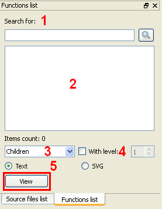

Contents
What is QSAGUI?
Getting started
Create call graph
Link call graphs
Clean call graph
Update call graph
Get funs/files lists
Show call graph
Settings
|
Get funs/files lists
Load call graph (this procedure is described in Show call graph section).
Functions and files lists are tabified and look the same:

1. Line edit for search of function/file in list.
2. Functions/files list.
3. Relation type.
3. Nesting level.
5. Output format. For SVG representation make sure that Graphviz package is installed.
Press the "View" button to see relations.
|